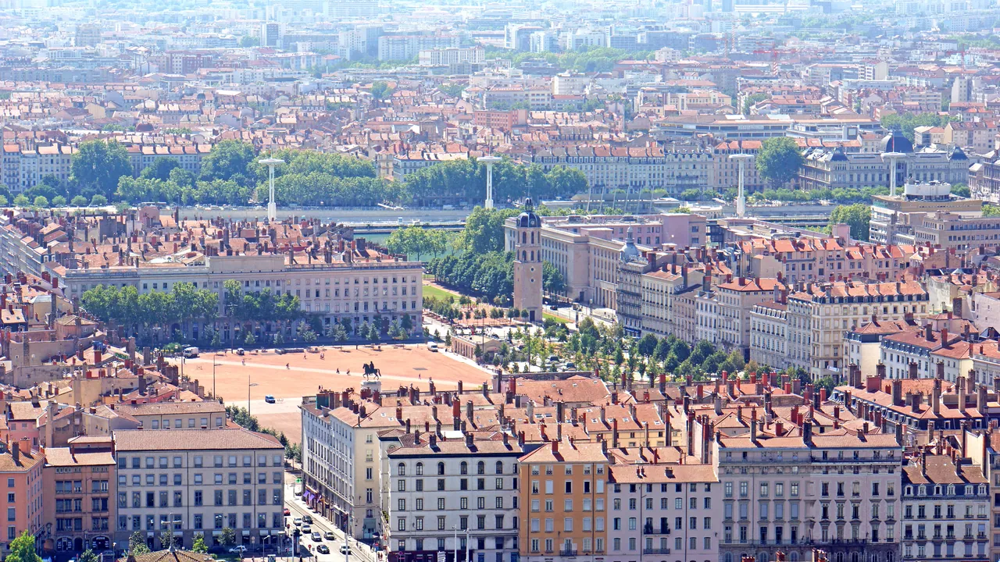

리옹과 안시 4박 5일
두 강의 도시, 르네상스 골목, 비단언덕과 알프스 호수
여행의 역할: 프로방스의 자동차 여행을 마치고 철도·도보 중심의 도시생활로 전환하는 구간이다. 리옹에서는 박물관을 많이 보는 대신 도시 지형, 르네상스 구시가지, 프레스킬의 광장, 크루아루스의 비단노동자 동네, 시장과 부숑 음식을 경험한다. 하루는 안시로 당일치기하여 알프스 호수도시라는 완전히 다른 지역성을 추가한다.
여행자 기준: Jason·Julia는 새로운 도시와 지역을 방문하는 경험을 미술관·박물관보다 우선한다. 따라서 Musée des Beaux-Arts, Musée des Confluences, Institut Lumière 등은 기본 일정이 아니라 비·피로·관심도에 따른 선택 모듈로 둔다. Julia의 수영도 선택 일정이며 숙소 선정조건이 아니다.
치안에 대한 결론: 인터넷에서 보이는 “리옹은 프랑스 범죄율 1위 도시”라는 표현은 프랑스 정부가 발표한 공식 순위가 아니다. 프랑스 내무부 SSMSI의 2025년 시·구 단위 자료는 14개 주요 범죄·위반 지표를 각각 공개하며, 리옹·파리·마르세유는 구별 자료도 제공한다. 정부는 하나의 ‘도시 위험 총점’을 발표하지 않으므로, 민간사이트가 서로 다른 범주의 건수를 합산한 순위는 포함 범주·인구기준·관광객·통근인구 처리방식에 따라 결과가 달라진다. 리옹 관광청은 리옹권을 안전한 여행지로 안내하면서도 Vieux Lyon과 혼잡한 대중교통의 소매치기를 특히 경고한다. 이번 일정은 강력범죄 공포보다 관광지 소매치기, Part-Dieu 수하물 관리, 야간 귀가와 숙소 입지를 현실적으로 관리하도록 설계한다.
두 강과 언덕의 도시를 미식·산책·철도로 경험하는 4박
강도·우천 보통, Annecy day 높음 · Vieux Lyon·Halles 중심, Annecy 취소